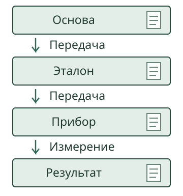
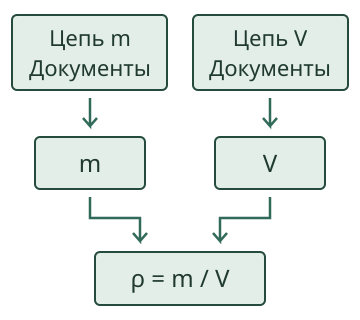
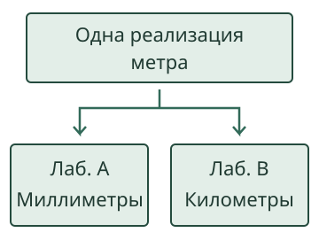
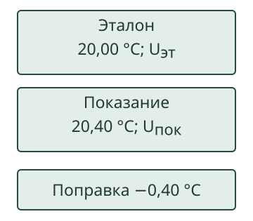
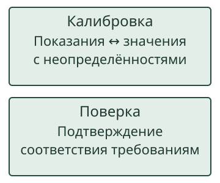
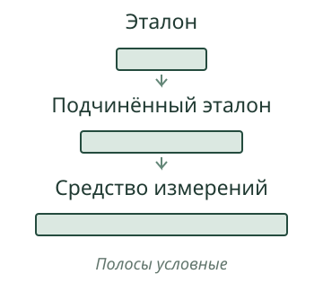
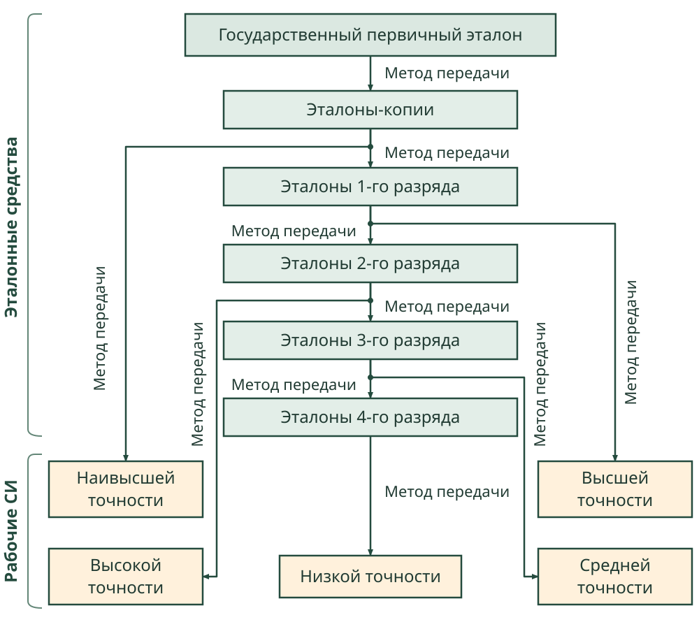
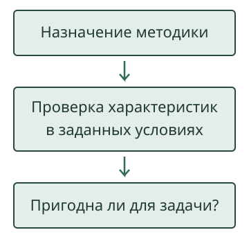
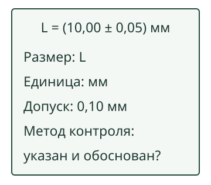

Глава 09
Метрологическая прослеживаемость
Как связать результат измерения с основой для сравнения через документированную цепь. Калибровочная иерархия, поверочные схемы и сопоставимость результатов.
Единство измерений и прослеживаемость
Единство измерений – это состояние измерений, при котором их результаты выражены в узаконенных единицах величин или в значениях по установленным шкалам измерений, а показатели точности измерений не выходят за установленные границы.
Метрологическая прослеживаемость – это свойство результата измерения, в соответствии с которым результат может быть соотнесен с основой для сравнения через документированную непрерывную цепь калибровок, каждая из которых вносит вклад в неопределенность измерений.

Одним из направлений цифровизации метрологии являются цифровые сертификаты калибровки (Digital Calibration Certificate, DCC). В таком документе результаты, единицы величин, неопределённость и сведения о прослеживаемости представлены в структурированном машиночитаемом виде. Это позволяет передавать данные между лабораторией и информационной системой заказчика без ручного переписывания. Международные подходы к DCC можно рассматривать при организации калибровочных работ в России. При этом международный формат DCC сам по себе не устанавливает обязательных требований российского законодательства и не заменяет сведения о поверке в Федеральном информационном фонде.
В этом определении «основой для сравнения» может быть определение единицы измерения через ее практическую реализацию или методика измерений, или эталон.
Метрологическая прослеживаемость требует наличия установленной калибровочной иерархии и (или) поверочной схемы.
Описание основы для сравнения должно включать время, в которое она была использована в данной калибровочной иерархии, вместе с любой другой существенной метрологической информацией, например о том, когда была выполнена первая калибровка в калибровочной иерархии.
Для измерений с более чем одной входной величиной в модели измерений каждое из значений входных величин должно само быть метрологически прослеживаемо, а калибровочная иерархия может иметь форму разветвленной структуры или сети. Усилия, связанные с установлением метрологической прослеживаемости для каждого значения входной величины, должны быть соизмеримы
с ее относительным вкладом в результат измерения.

Метрологическая прослеживаемость результата измерения не гарантирует, что показатель точности (неопределенность) измерений соответствует заданной цели или что отсутствуют ошибки.
Сличение между двумя эталонами может рассматриваться как калибровка, если это сличение используется для проверки и, при необходимости, для корректировки значения величины, показателей точности (неопределенности) измерений, приписываемых одному из эталонов.
Для подтверждения метрологической прослеживаемости ILAC (the International Laboratory Accreditation Cooperation (Международное сотрудничество по аккредитации лабораторий)) рассматривает следующие элементы:
- непрерывная цепь метрологической прослеживаемости к международным эталонам или национальным эталонам,
- документированная неопределенность измерений,
- документированная методика измерений,
- аккредитация на техническую компетентность,
- метрологическая прослеживаемость к СИ
- и интервалы между калибровками.
Сокращенный термин «прослеживаемость» иногда используют для обозначения метрологической прослеживаемости, а также и для других понятий, таких как прослеживаемость пробы (sample traceability), прослеживаемость документа (document traceability), прослеживаемость прибора (instrument traceability) или прослеживаемость материала (material traceability), где частью слова является корень «слеж» от слова «след». Вследствие этого предпочтительнее использовать полный термин «метрологическая прослеживаемость», если существует какой-либо риск путаницы.
Метрологическая сопоставимость
Метрологическая сопоставимость (результатов измерений) – это сопоставимость результатов измерений для величин данного рода, которые метрологически прослеживаются к одной и той же основе для сравнения.
Пример, результаты измерений расстояний от Земли до Луны и от Парижа до Лондона метрологически сопоставимы, если они оба метрологически прослеживаются к одной и той же единице измерения, например метру.
Метрологическая сопоставимость результатов измерений не требует, чтобы сравниваемые измеренные значения величины и соответствующие неопределенности (погрешности) измерений были одного порядка.

Метрологическая прослеживаемость к единице (измерения) – это метрологическая прослеживаемость, когда основой для сравнения является определение единицы измерения через ее практическую реализацию.
Выражение «прослеживаемость к СИ» означает «метрологическую прослеживаемость к единице измерения Международной системы единиц».
Сличение, калибровка и поверка
Сличение эталонов – это установление соотношения между результатами измерений при воспроизведении и передаче единицы измерения или шкалы измерений данными эталонами одного уровня точности.
Калибровка (средств измерений) – это совокупность операций, устанавливающих соотношение между значением величины, полученным с помощью данного средства измерений и соответствующим значением величины, определенным с помощью эталона с целью определения метрологических характеристик этого средства измерений.
Примером метрологической характеристики является диаграмма калибровки, несущая информацию об инструментальной неопределенности измерений. При калибровке могут быть определены и другие метрологические характеристики средств измерений.
Результаты калибровки позволяют определить значения измеряемой величины по показаниям средства измерений, или поправки к его показаниям, или оценить погрешность этих средств.
Термин калибровка определен как операция, в ходе которой при заданных условиях на первом этапе устанавливают соотношение между значениями величин с неопределенностями измерений, которые обеспечивают эталоны, и соответствующими показаниями с присущими им неопределенностями, а на втором этапе на основе этой информации устанавливают соотношение, позволяющее получать результат измерения, исходя из показания.

Поверка средств измерений — совокупность операций, выполняемых в целях подтверждения соответствия средств измерений метрологическим требованиям. Поверку проводят юридические лица и индивидуальные предприниматели, аккредитованные на её проведение в соответствии с законодательством Российской Федерации об аккредитации в национальной системе аккредитации. Для отдельных средств измерений Правительство РФ устанавливает требование о проведении поверки только государственными региональными центрами метрологии.
Так же используется термин верификация – предоставление объективных свидетельств того, что данный объект полностью удовлетворяет установленным требованиям.
Объектом верификации может быть, например, процесс, методика измерений, материал, вещество или средство измерения.

Цепь прослеживаемости и калибровочная иерархия
Цепь метрологической прослеживаемости – это последовательность эталонов и калибровок (поверок), которые используются для соотнесения результата измерения с основой для сравнения.
Цепь метрологической прослеживаемости определяется через калибровочную иерархию или поверочную схему, а используется для установления метрологической прослеживаемости результата измерения.
Калибровочная иерархия – это последовательность калибровок, начиная от основы для сравнения и кончая средством измерения, причем в этой последовательности результат каждой калибровки зависит от результата предыдущей калибровки.
Неопределенность измерений неизбежно возрастает с увеличением числа калибровок при передаче единицы величины.

Элементами калибровочной иерархии являются один или более эталонов
и средств измерений.
Для этого определения «основой для сравнения» может быть определение единицы измерения через ее практическую реализацию, или методика измерений, или эталон.
Обеспечение правильной передачи размера единиц физической величины во всех звеньях метрологической цепи осуществляется посредством поверочных схем.
Поверочные схемы
Поверочная схема – это иерархическая структура, устанавливающая соподчинение эталонов, участвующих в передаче единицы или шкалы измерений от исходного эталона средствам измерений (с указанием методов и погрешностей при передаче), утверждаемая в установленном порядке в виде нормативного документа.
Поверочная схема может быть использована для установления метрологической прослеживаемости результатов измерений.
Поверочная схема бывает:
Виды поверочных схем
государственная поверочная схема (рис. 17) распространяется на все средства измерения данной ФВ, имеющиеся в стране, и разрабатывается в виде государственного стандарта, состоящего из чертежа поверочной схемы и текстовой части, содержащей пояснения к чертежу;

От эталонов-копий размер единицы передают рабочим СИ наивысшей точности; от 1-го разряда — высшей; от 2-го — высокой; от 3-го — средней; от 4-го — низкой точности. Стрелки показывают направление передачи размера единицы, а не движение самих приборов.
Рис. 17. Государственная поверочная схема локальная поверочная схема – это поверочная схема, распространяющаяся на эталоны и средства измерений данной величины, применяемые в регионе, отрасли, ведомстве или на отдельном предприятии (в организации) и утверждаемая в качестве нормативного документа организацией (учреждением, подразделением – для отдельного предприятия), отвечающей за обеспечение единства измерений.
Они не должны противоречить государственным схемам для средств измерений одних и тех же величин. Они могут быть составлены при отсутствии государственной поверочной схемы. В них допускается указывать конкретные типы (экземпляры) средств измерений. Ведомственная и локальная поверочные схемы оформляют в виде чертежа, элементы которого приведены на рис. 18.
а)
1→3; 3→5
б)
1→3; 3→5; 3→6
в)
1→3; 1→4; 3→5; 4→5
г)
1→3; 1→4; 3→5; 4→6
1 — эталон; 3 и 4 — методы передачи; 5 и 6 — объекты поверки. В панели в) методы 3 и 4 ведут к одному объекту 5; в панели г) — к разным объектам.
Поверочная схема устанавливает передачу размера единиц одной или нескольких взаимосвязанных величин. Она должна включать не менее двух ступеней передачи размера. Поверочную схему для средств измерения одной и той же величины, существенно отличающихся по диапазонам измерений, условиям применения и методам поверки, а также для средств измерений нескольких ФВ допускается подразделять на части. На чертежах поверочной схемы должны быть указаны:
- наименования СИ и методов поверки;
- номинальные значения ФВ или их диапазоны;
- допускаемые значения погрешностей СИ;
- допускаемые значения погрешностей методов поверки.
Аттестация методик и метрологическая экспертиза
Аттестация методик измерений – это исследование и подтверждение соответствия методик измерений установленным метрологическим требованиям
к измерениям.
Также используется термин валидация, верификация, при которой установленные требования связаны с предполагаемым использованием.
Валидации подвергаются методики измерений при необходимости проверки установленных к ним требований в соответствии с предполагаемым их использованием.

Метрологическая экспертиза документации; конструкторская метрологическая экспертиза, технологическая метрологическая экспертиза – это анализ и оценивание экспертами-метрологами правильности применения метрологических требований, правил и норм, в первую очередь связанных с единством измерений.
